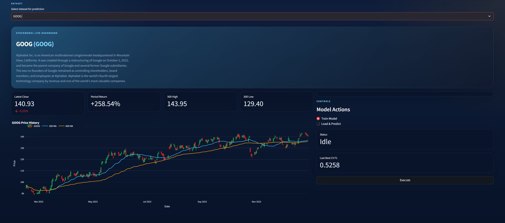
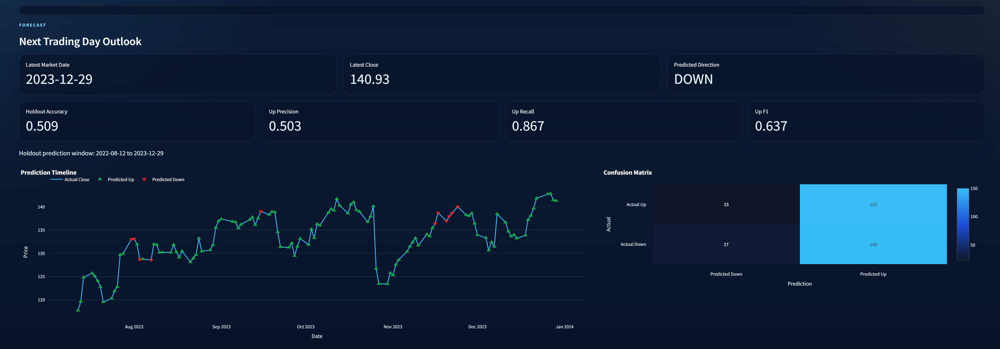
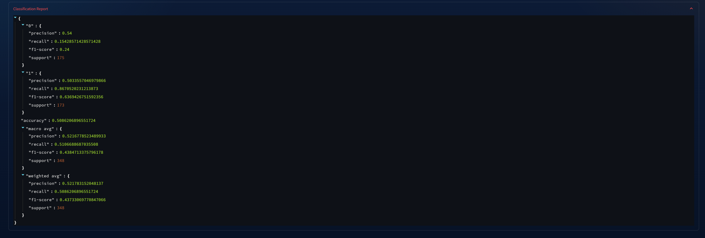

Used `TimeSeriesSplit` and search-based tuning instead of shuffled evaluation.
Project Preview
Stock Prediction Model.
Streamlit app for stock-trend prediction, evaluation, and model output review.
RSI, MACD, Bollinger bands, moving averages, and lag features.
Price-increase prediction F1 from the main classification setup.
Screenshots
App views.



These screenshots are from a placeholder run, so they mainly show the app flow rather than final model performance.